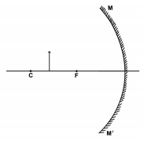
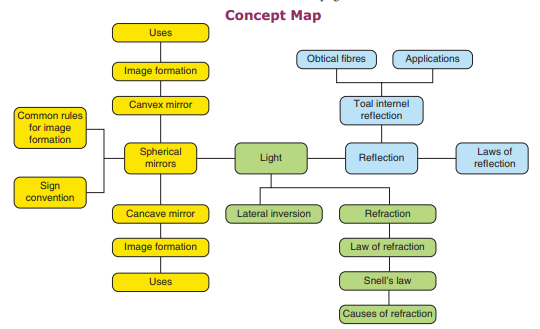
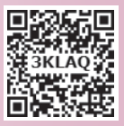

1. Choose the correct answer.
1. A ray of light passes from one medium to another medium. Refraction takes place when angle of incidence is dash
A bracket closed 0 degree b bracket closed 45 degree c bracket closed 90 degree
2. dash is used as reflectors in torch light.
A bracket closed Concave mirror b bracket closed Plane mirror c bracket closed Convex mirror
3. We can create enlarged, virtual images with dash
a bracket closed concave mirror
b bracket closed plane mirror
c bracket closed convex mirror
4. When the reflecting surface is curved outwards the mirror formed will be dash
a bracket closed concave mirror
b bracket closed convex mirror
c bracket closed plane mirror
5. When a beam of white light passes through a prism it gets dash
a bracket closed reflected
b bracket closed only deviated
c bracket closed deviated and dispersed
6. The speed of light is maximum in dash
a bracket closed vacuum
b bracket closed glass
c bracket closed diamond
1. The angle of deviation depends on the refractive index of the glass.
2. If a ray of light passes obliquely from one medium to another, it does not suffer any deviation.
3. The convex mirror always produces a virtual, diminished and erect image of the object.
4. When an object is at the centre of curvature of concave mirror the image formed will be virtual and erect.
5. The reason for brilliance of diamonds is total internal reflection of light.
1. In going from a rarer to denser medium, the ray of light bends dash.
2. The mirror used in search light is dash.
3. The angle of deviation of light ray in a prism depends on the angle of dash.
4. The radius of curvature of a concave mirror whose focal length is 5cm is dash.
5. Large dash mirrors are used to concentrate sunlight to produce heat in solar furnaces.
1. Ratio of height of image to height of object Concave mirror
2. Used in hairpin bends in mountains Total internal reflection
3. Coin inside water appearing slightly raised Magnification
4. Mirage Convex mirror
5. Used as Dentist’s mirror Refraction
Mark the correct choice as:
A bracket closed If both assertion and reason are true and reason is the correct explanation.
B bracket closed If both assertion and reason are true and reason is not the correct explanation.
C bracket closed If assertion is true but reason is false.
D bracket closed If assertion is false but reason is true.
1. Assertion: For observing the traffic at a hairpin bend in mountain paths a plane mirror is preferred over convex mirror and concave mirror.
Reason: A convex mirror has a much larger field of view than a plane mirror or a concave mirror.
2. Assertion: Incident ray is directed towards the centre of curvature of spherical mirror. After reflection it retraces its path.
Reason: Angle of incidence Bracket OPEN I bracket closed = Angle of reflection Bracket OPEN r bracket closed = 0degree
1. According to cartesian sign convention, which mirror and which lens has negative focal length question mark
2. Name the mirror Bracket OPEN s bracket closed that can give
Bracket OPEN 1 bracket closed an erect and enlarged image
Bracket OPEN 2 bracket closed same sized, inverted image.
3. If an object is placed at the focus of a concave mirror, where is the image formed question mark
4. Why does a ray of light bend when it travels from one medium to another question mark
5. What is the speed of light in vacuum question mark
6. Concave mirrors are used by dentists to examine teeth. Why question mark
1. a bracket closed Complete the diagram to show how a concave mirror forms the image of the object.
B bracket closed What is the nature of the image question mark

2. Pick out the concave and convex mirrors from the following and tabulate them. Rear-view mirror, Dentist’s mirror, Torchlight mirror, Mirrors in shopping malls, Make-up mirror.
3. State the direction of incident ray which after reflection from a spherical mirror retraces its path. Give reason for your answer.
4. What is meant by magnification question mark Write its expression. What is its sign for real image and virtual image question mark
5. Write the spherical mirror formula and explain the meaning of each symbol used in it.
1. a bracket closed Draw ray diagrams to show how the image is formed using a concave mirror, when the position of object is: I bracket closed at C ii bracket closed between C and F iii bracket closed between F and P of the mirror.
B bracket closed Mention the position and nature of image in each case.
2. Explain with diagrams how refraction of incident light takes place from
A bracket closed rarer to denser medium b bracket closed denser to rarer medium c bracket closed normal to the surface separating the two media.
1. A concave mirror produces three times magnified real image of an object placed at 7 cm in front of it. Where is the image located question mark Bracket OPEN Answer: 21 cm in front of the mirror bracket closed
2. Light enters from air into a glass plate having refractive index 1.5. What is the speed of light in glass question mark Bracket OPEN Answer: 2 into 10 power 8 m s power minus 1 bracket closed
3. The speed of light in water is 2.25 × 10 power 8 m s power minus 1. If the speed of light in vacuum is 3 into 10 power 8 m s power minus 1, calculate the refractive index of water. Bracket OPEN Answer: 1.33 bracket closed
1. Light ray emerges from water into air. Draw a ray diagram indicating the change in its path in water.
2. When a ray of light passes from air into glass, is the angle of refraction greater than or less than the angle of incidence question mark
3. What do you conclude about the speed of light in diamond. if the refractive index of diamond is 2.41 question mark
1.Optics – Brijlal and Subramaniam Bracket OPEN 1999 bracket closed Sultan chand Publishers.
2. Optics – Ajay Ghotak Dharyaganj Publishing circle, New Delhi.
3. Physics for entertainment – Book 2 Yakov Perelman, Mir Publishers.
www.Physics.org
https://www.geogebra.org/m/aJuUDA9Z
http://www.animations.physics.unsw.edu.
au/light/geometrical-optics/ http://www.splung.com/content/sid/4/ page/snellslaw

ICT CORNER LIGHT - REFRACTION
Refraction is bending of light when travel from one medium to another
This activity enable the students to learn about the different mediums and its role in refraction of light

Step 1. Type the following URL in the browser or scan the QR code from your mobile. You can see“Bending light” on the screen. Click intro
Step 2. Now you can see light beam from the torch. Options are there in the four corners. Select options of your choice and then press the button in the torch. You can see the phenomeno of refraction. The angles of refraction differ for different medium.
You can check it with the protractor
Step 3. Next select prism. Now explore with given tools and different mediums and come out with different
https://phet.colorado.edu/sims/html/bending-light/latest/bending-light_en.html